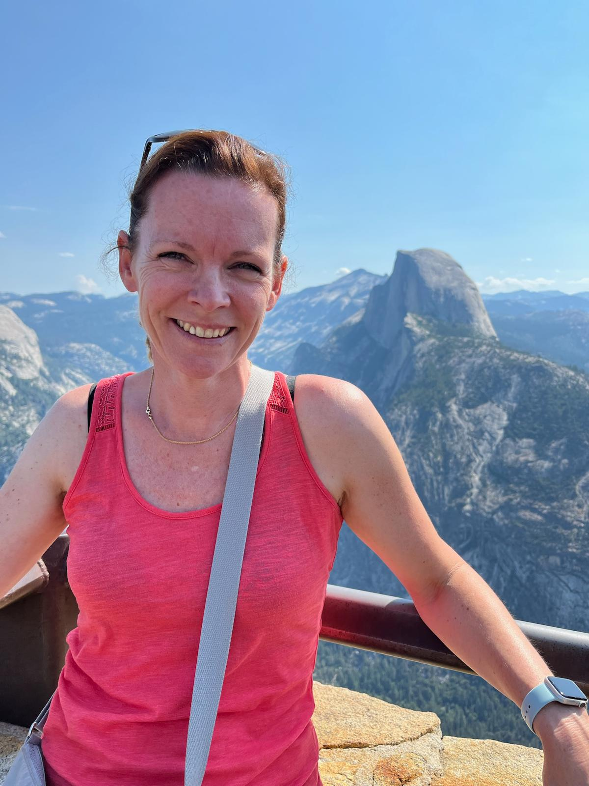
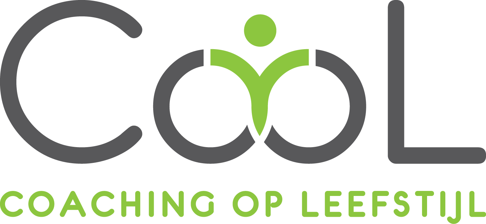

Over mij
Wie ik ben
Ik ben Anouk van Dijk - van Roon, leefstijlcoach in Rivierenland. Samen met mijn 3 jongens en man woon ik in Tiel, hartje regio Rivierenland. Mijn taak als leefstijlcoach is om jou te begeleiden in het bereiken van je gezondheidsdoelen op een comfortabele manier.
Mijn visie op leefstijl
Dat ik een gezonde leefstijl heb, betekent niet direct dat ik elke dag sport en alleen leef op wortels en water. Wel ben ik elke dag bewust van wat ik eet, en probeer ik steeds weer een beter balans te vinden tussen comfort en gezondheid. Ik vind het belangrijk om een gezonde maaltijd op tafel te zetten voor mijn gezin. Het gaat ons dan niet alleen om wat we eten, maar vooral dat we er bewust mee bezig zijn.
Opleiding & ervaring
Na mijn praktijk in de Koningklijke Marine ben ik mijn praktijk gestart als gewichtsconsulent. Om mijn cliënten daar het beste mee te kunnen helpen, heb ik in 2022 de post-HBO opleiding Leefstijlcoach afgerond. Daarnaast heb ik de ACT basis- en verdiepingsopleiding gevolgd, zodat ik mijn cliënten nog beter kan begeleiden in hun gezondere leefstijl. Ik ben hiernaast ook aangesloten bij de Beroepsvereniging Leefstijlcoaches Rivierenland BLCN, en ben tevens CooL-coach. Cool is een gecombineerde leefstijlinterventie die, onder bepaalde voorwaarden, door de zorgverzekering wordt goedgekeurd.
Hobby’s & vrije tijd
In mijn vrije tijd geniet ik van gezellig met de familie de natuur in. Onze vakanties brengen we dus ook graag door in rustige, groene omgevingen. Wandelen door heuvels of bergen is mijn favoriet, en dan het liefst een heerlijke picknick onderweg. De (gravel) fietsen gaan echter ook graag mee!
Certificeringen:
- Mindfulness Coach – Sonnevelt (2023)
- Voedingspsychologie – LOI (2021)
- Stressmanagement – ACT Academy (2020)
- Leefstijlcoach verdieping – Sonnevelt (2022)
